Fun with Filters and Frequencies
Part 1Fun with Filters
1.1Convolution from scratch
For the first part, I implemented convolution from scratch using only NumPy. Convolution works by sliding a small kernel across the image and multiplying the kernel values with the pixels underneath it, then adding them together.
I implemented it in two ways. The first version uses four loops, going through every output pixel and every value in the kernel. The second version uses only two loops and lets NumPy handle the multiplication and summation for each window.
Both versions use zero padding around the image. I also flipped the kernel before applying it, since this is what makes it convolution instead of correlation.
Code: padding, output window, and both convolutions
def pad_zeros(image, ph, pw):
padded = np.zeros((image.shape[0] + 2 * ph, image.shape[1] + 2 * pw))
padded[ph:ph + image.shape[0], pw:pw + image.shape[1]] = image
return padded
def output_window(shape, kshape, mode):
# which part of the full output to keep
h, w = shape
kh, kw = kshape
if mode == "full": return 0, 0, h + kh - 1, w + kw - 1
if mode == "same": return (kh - 1) // 2, (kw - 1) // 2, h, w
if mode == "valid": return kh - 1, kw - 1, h - kh + 1, w - kw + 1
def conv2d_4loops(image, kernel, mode="same"):
kh, kw = kernel.shape
flipped = kernel[::-1, ::-1]
padded = pad_zeros(image, kh - 1, kw - 1)
r0, c0, out_h, out_w = output_window(image.shape, kernel.shape, mode)
out = np.zeros((out_h, out_w))
for i in range(out_h):
for j in range(out_w):
total = 0.0
for u in range(kh):
for v in range(kw):
total += padded[r0 + i + u, c0 + j + v] * flipped[u, v]
out[i, j] = total
return out
def conv2d_2loops(image, kernel, mode="same"):
kh, kw = kernel.shape
flipped = kernel[::-1, ::-1]
padded = pad_zeros(image, kh - 1, kw - 1)
r0, c0, out_h, out_w = output_window(image.shape, kernel.shape, mode)
out = np.zeros((out_h, out_w))
for i in range(out_h):
for j in range(out_w):
window = padded[r0 + i:r0 + i + kh, c0 + j:c0 + j + kw]
out[i, j] = np.sum(window * flipped)
return outI compared my implementations with scipy.signal.convolve2d. The results were almost exactly the same,
with only tiny floating-point differences (around 2e-15). The two-loop version was also much faster than the
four-loop version because NumPy handles the inner calculations in C:
| implementation | 128×128 crop, 9×9 box | my 290×206 portrait |
|---|---|---|
| four loops | 0.23 s | 0.95 s |
| two loops | 0.036 s | 0.16 s |
scipy.signal.convolve2d | 0.0017 s | 0.007 s |
One thing I noticed was that zero padding can cause problems near the edges of an image. For a blur, the border
becomes slightly darker because the filter averages in the zeros. For edge detection, the jump from the image to
zero creates strong fake edges around the border. Because of this, I used symmetric padding
(boundary="symm") for the later parts.
For the derivative filters, I used:
Dx = [1, -1]to detect vertical edgesDy = [1, -1]ᵀto detect horizontal edges
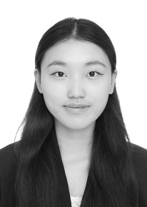
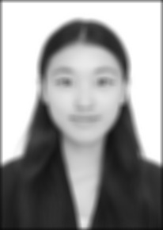
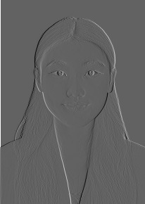
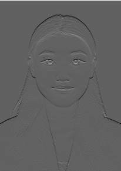
The box filter made the portrait much softer because it averages the surrounding pixels. The derivative filters instead highlighted the edges of the face, hair, clothes, and other features.
1.2Finite difference operator
Next, I used the finite difference operators on the cameraman image.
Applying Dx and Dy gives the change in brightness in the x and y directions. I combined
them to get the gradient magnitude, which tells me how strong the change in brightness is at each pixel.
\[\lvert \nabla I \rvert = \sqrt{\left(\frac{\partial I}{\partial x}\right)^2 + \left(\frac{\partial I}{\partial y}\right)^2}\]
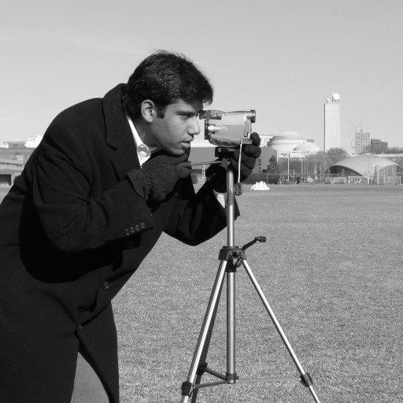
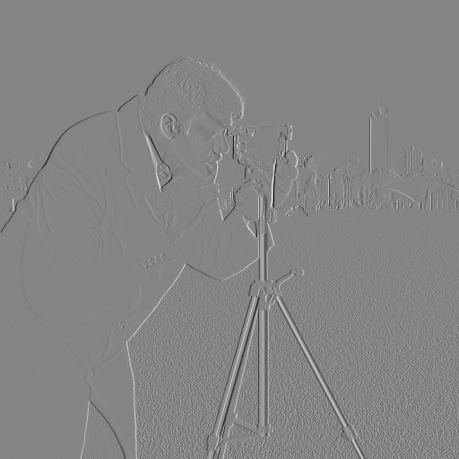
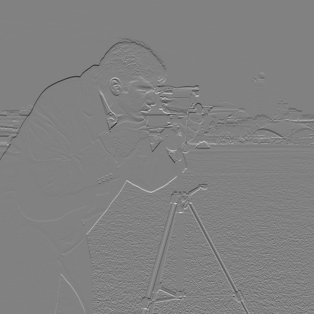
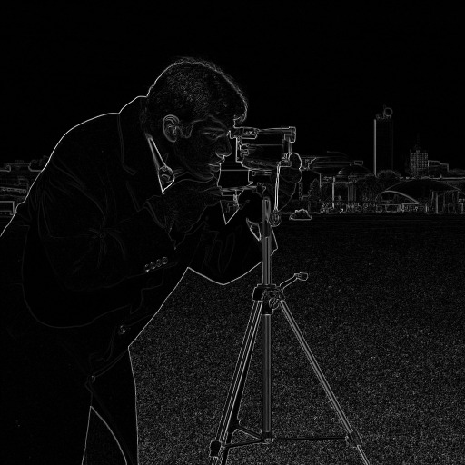
I then converted this into an edge map by keeping only pixels above a certain threshold.
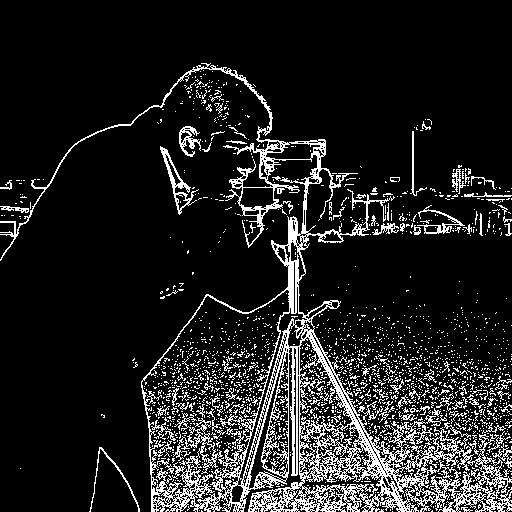
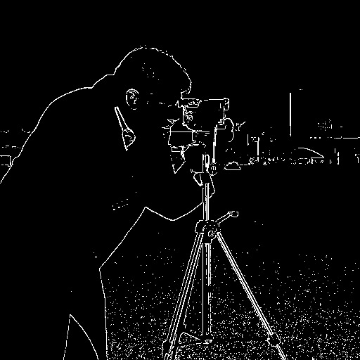
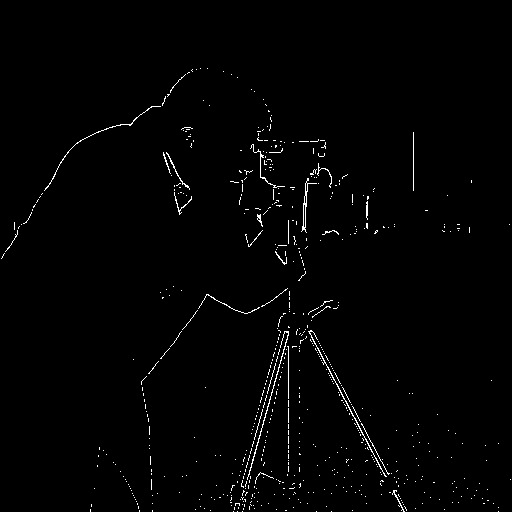
I tried thresholds of 0.10, 0.20 and 0.30. At 0.10, there was too much noise from the grass. At 0.30, the image was cleaner, but some actual edges such as parts of the coat and tripod disappeared.
I ended up choosing 0.20 because it kept the main edges while removing most of the noise.
1.3Derivative of Gaussian
The problem with the finite difference method is that it also picks up small details and noise as edges. The grass in the image is a good example of this.
To fix this, I blurred the image with a Gaussian first and then applied the derivative filters. I built the Gaussian (σ = 2, 13×13) from cv2.getGaussianKernel:
def gaussian_kernel_2d(sigma):
ksize = 2 * int(np.ceil(3 * sigma)) + 1
g = cv2.getGaussianKernel(ksize, sigma)
return g @ g.T # outer product -> 2D kernel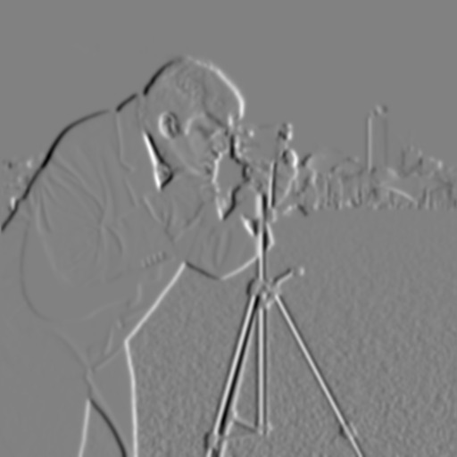
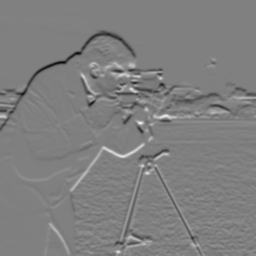
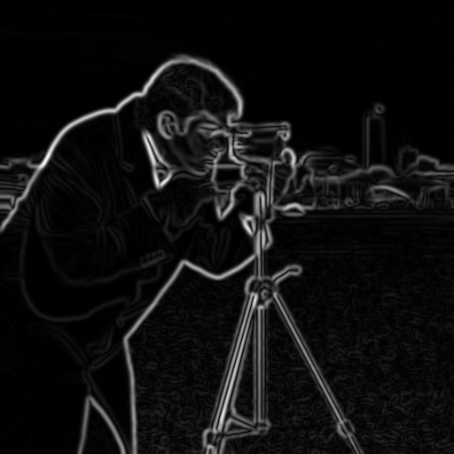
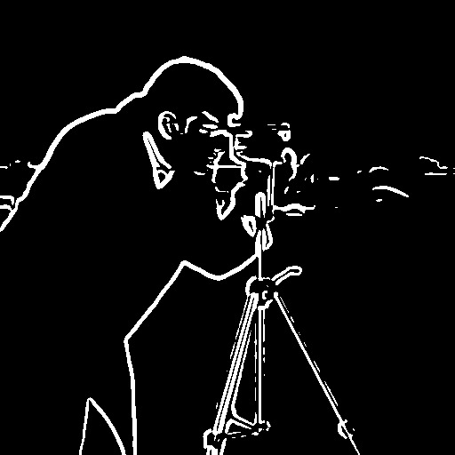
After blurring, the grass noise was mostly gone and the edges became much more continuous. However, some fine details such as the building windows were also removed. The edges also became wider because the blur softened the transitions.
The gradient values became smaller after blurring, so I had to lower the threshold from 0.20 to 0.05.
Since convolution is associative, I could also combine the Gaussian and derivative filters into one filter and apply it directly to the image:
dog_x = convolve2d(G, Dx, mode="full")
dog_y = convolve2d(G, Dy, mode="full")
gx = convolve2d(cam, dog_x, mode="same", boundary="symm")
gy = convolve2d(cam, dog_y, mode="same", boundary="symm")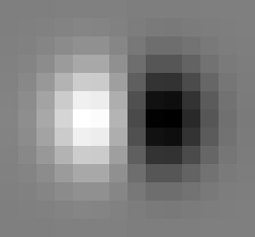
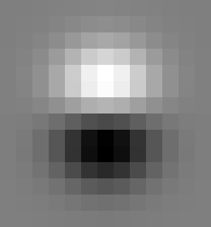


I checked the results from both methods and they were essentially identical (the largest difference was 2e-15).
Bells & Whistles:Gradient orientation in colour
I also looked at the direction of the gradient, not just its magnitude.
I represented the gradient direction using hue and the edge strength using brightness. This means that edges
pointing in different directions appear as different colours, while stronger edges appear brighter. Since built-in
angle functions weren't allowed, I wrote my own atan2 using a polynomial approximation of arctan.
Show the atan2 code
def my_atan(z): # only works for |z| <= 1
z2 = z * z
return z * (0.9998660 + z2 * (-0.3302995 + z2 * (0.1801410 + z2 * (-0.0851330 + z2 * 0.0208351))))
def my_atan2(y, x):
ax, ay = np.abs(x), np.abs(y)
big, small = np.maximum(ax, ay), np.minimum(ax, ay)
ratio = np.where(big > 0, small / np.where(big > 0, big, 1), 0)
a = my_atan(ratio)
a = np.where(ay > ax, np.pi / 2 - a, a)
a = np.where(x < 0, np.pi - a, a)
a = np.where(y < 0, -a, a)
return a
hue = (theta % (2 * np.pi)) / (2 * np.pi)
rgb = hsv_to_rgb(np.dstack([hue, np.ones_like(hue), magnitude_scaled]))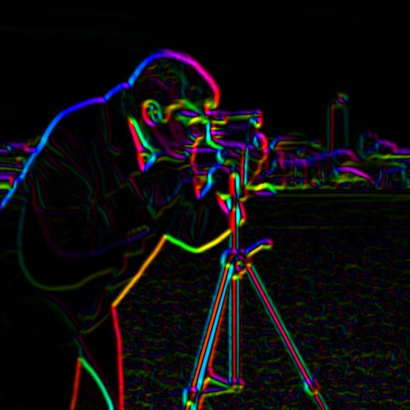
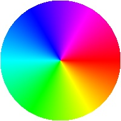
One interesting thing I noticed is that the two sides of a thin object can have opposite colours because the gradient points from dark to bright. Edges that face the same direction have similar colours.
Part 2Fun with Frequencies
2.1Image sharpening
For sharpening, I used the idea that a Gaussian blur removes high-frequency details from an image.
If I subtract the blurred image from the original, I get the details that were removed by the blur. I can then add some of these details back to the original to make it look sharper. This can be combined into a single convolution, the unsharp mask filter:
\[\text{sharpened} = f + \alpha\,(f - f * G) = f * \big((1+\alpha)\,\delta - \alpha\,G\big)\]
def unsharp_kernel(sigma, alpha):
g = gaussian_kernel_2d(sigma)
delta = np.zeros_like(g)
delta[g.shape[0] // 2, g.shape[1] // 2] = 1.0
return (1 + alpha) * delta - alpha * g
def unsharp(image, sigma, alpha):
kernel = unsharp_kernel(sigma, alpha)
chans = [convolve2d(image[:, :, c], kernel, mode="same", boundary="symm") for c in range(3)]
return np.clip(np.dstack(chans), 0, 1)Taj Mahal (σ = 2)
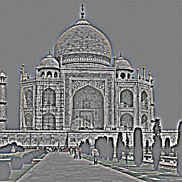

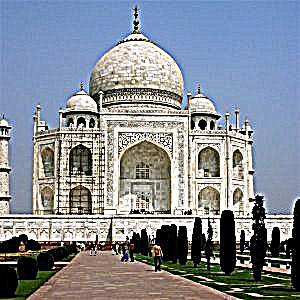
I tried different values of α on the Taj Mahal image. With α = 0.5 or 1, the image looked naturally sharper. Increasing α to 2 made the carvings stand out more, but at α = 4, I started seeing bright and dark halos around strong edges.
This showed me that sharpening is basically increasing the contrast around edges. If I push it too far, the image starts to look unnatural.
An out-of-focus elk (σ = 4)
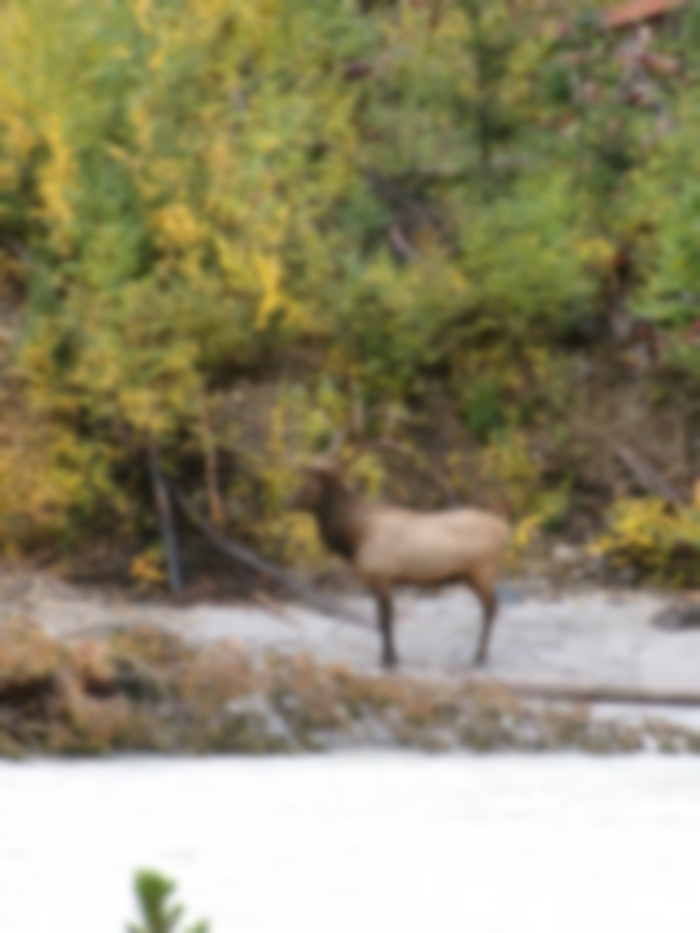
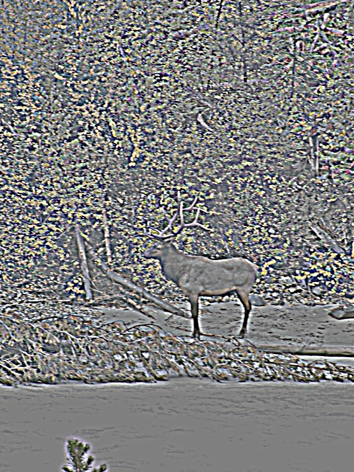
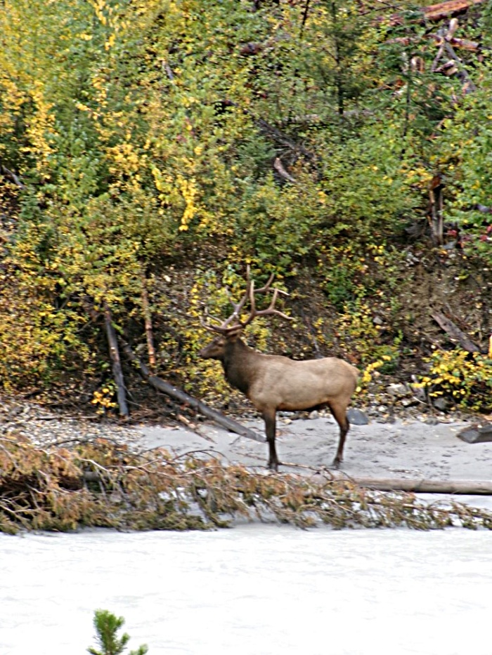
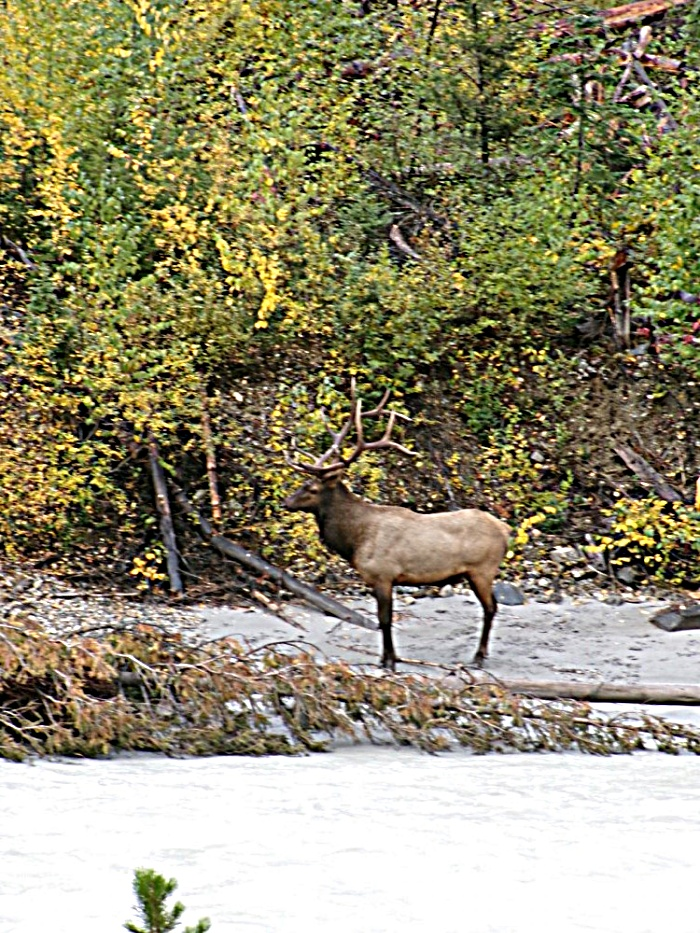
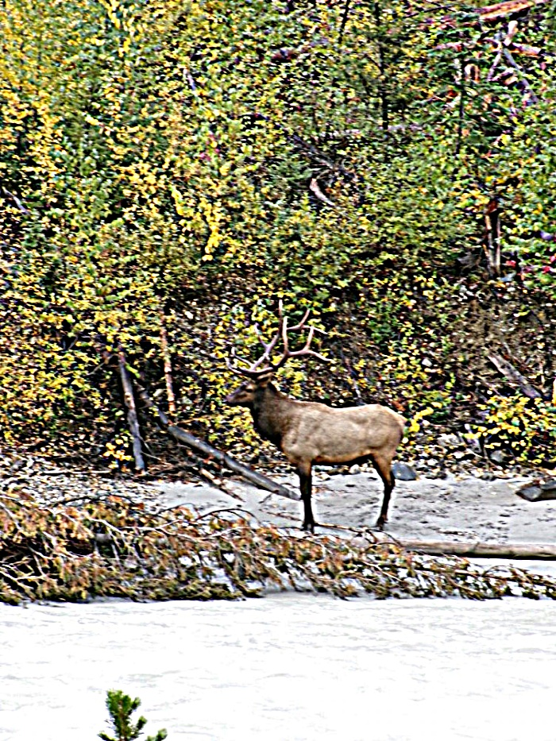
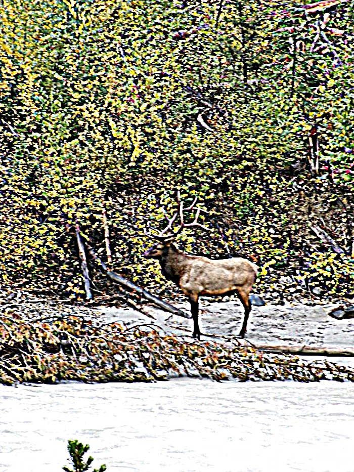
I also tried sharpening a photo of an elk that was already out of focus. The sharpening made the outline of the elk and trees more defined, but after around α = 4, the image mostly became grainier instead of sharper.
This made sense because real defocus blur removes fine details completely. Sharpening can bring out details that are still present, but it cannot recreate details that were completely lost.
Blur a sharp photo, then sharpen it back
I also tested this by intentionally blurring a sharp glacier photo (σ = 2) and then sharpening it again. The top row is a crop of the rocky ridge on the right side of the photo, enlarged 3× so the detail is easier to see. The bottom row is the full photo.
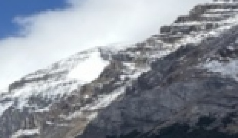
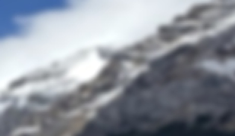
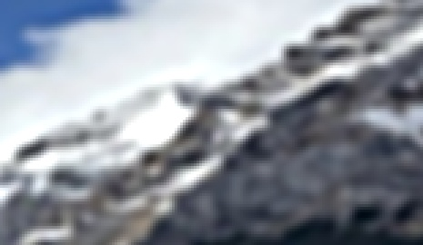
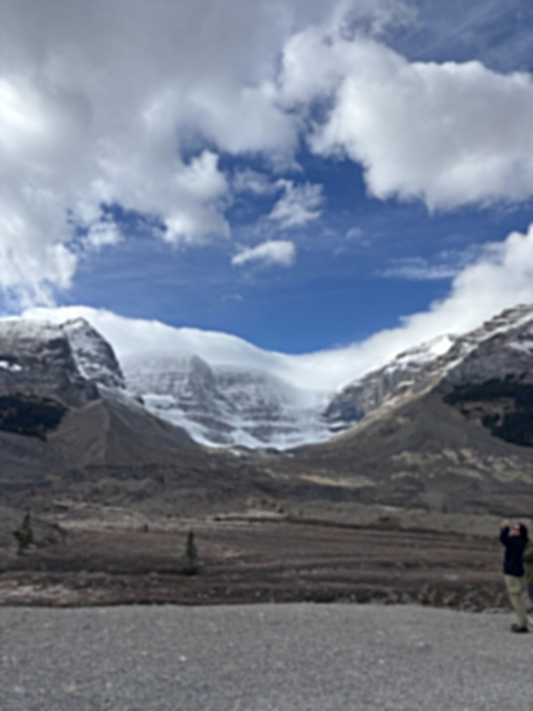
The sharpened version was closer to the original than the blurred version, especially around α = 1–2. However, it still could not fully recover the smallest details.
2.2Hybrid images
For hybrid images, I combined the low frequencies of one image with the high frequencies of another.
The idea is that when we look at an image from close up, we notice more fine details, while from far away, we mainly see the larger shapes. This allows the same image to look different depending on how far away we are.
def hybrid(low_img, high_img, sigma_low, sigma_high):
low = blur(low_img, sigma_low)
high = high_img - blur(high_img, sigma_high)
return low, high, np.clip(low + high, 0, 1)Derek + Nutmeg
For my first hybrid, I used Derek and Nutmeg. I aligned their eyes first because the alignment is really important. If the eyes are in different positions, the result looks like two faces placed on top of each other instead of one combined face.

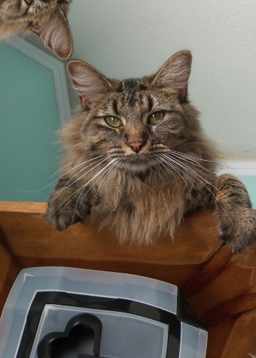
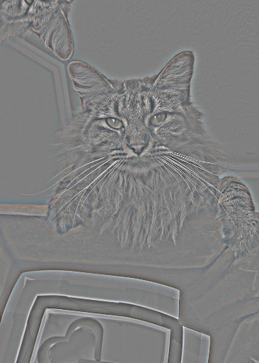
I used Derek for the low frequencies and Nutmeg for the high frequencies. For the cutoffs, I used σ = 8 for Derek (about 0.020 cycles/pixel) and σ = 4 for Nutmeg (about 0.040 cycles/pixel), after comparing a few options up close and shrunk down.
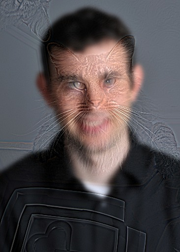


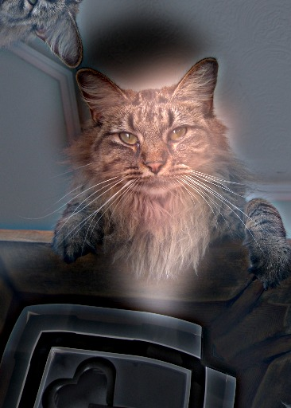
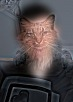
With smaller σ values, too much of Derek's detail stayed in, so up close he was still obvious and the cat was only a faint overlay. With larger σ values, the cat took over, and even the small version started to look like a cat. σ = 8 / 4 gave the cleanest switch between the two.


When viewed up close, the cat is more obvious, while from far away, Derek becomes more visible.
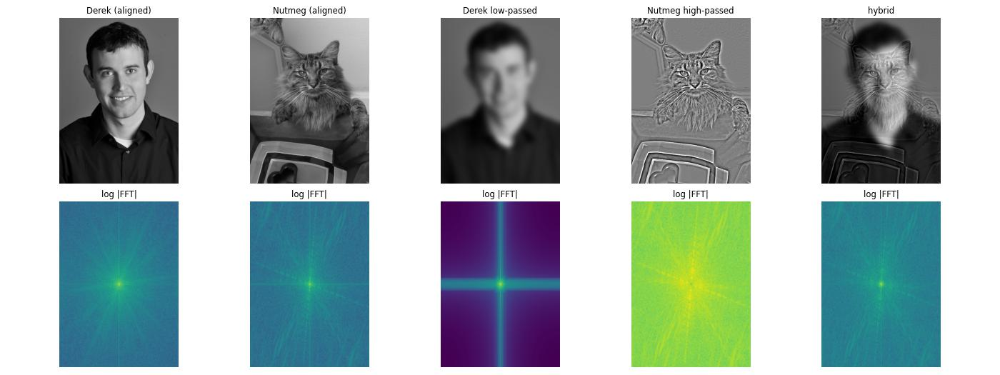
I also looked at the Fourier transforms of the images. The low-frequency image has most of its energy near the centre of the spectrum, while the high-frequency image has energy further away from the centre.
More hybrids
I tried a few other pairs as well, including Jisoo and Wonyoung, and Harry Potter and Hermione.
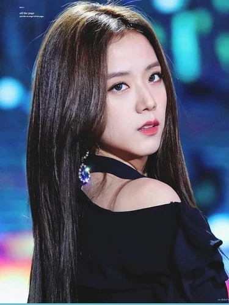
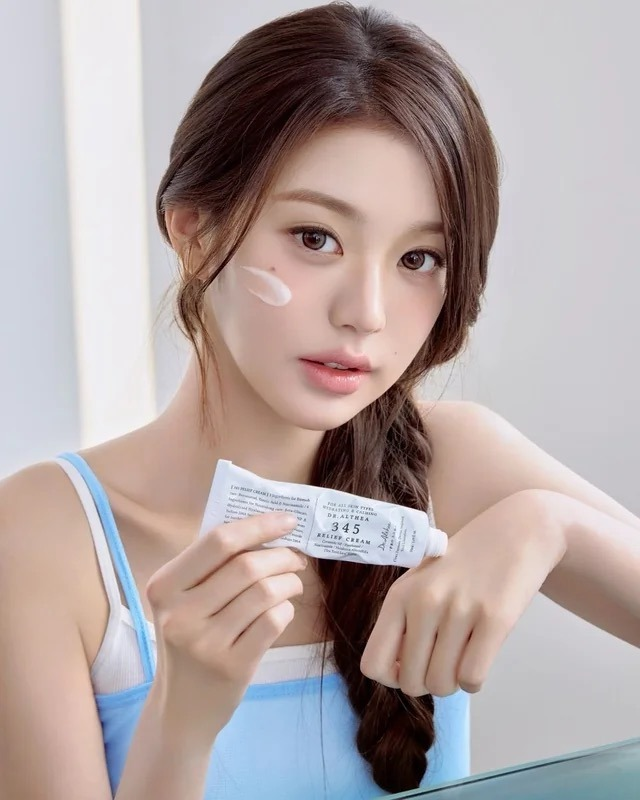
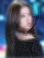
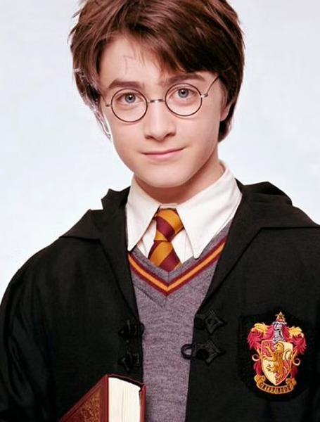
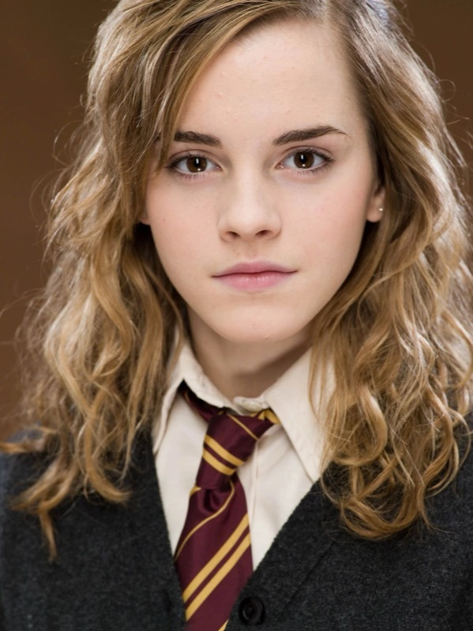
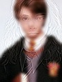
One thing I noticed is that the backgrounds can make a hybrid look less convincing. Even if the faces are aligned properly, details from one background can still remain visible. This means that the two images should ideally have similar poses, framing, and backgrounds.
Bells & Whistles: colour
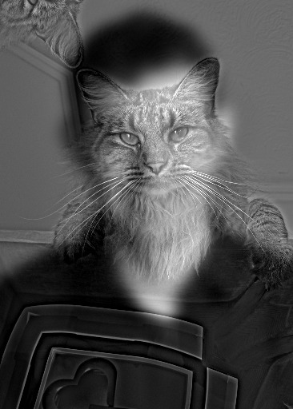
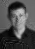
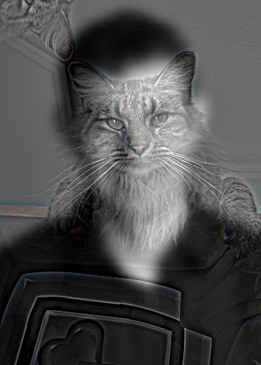
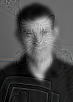
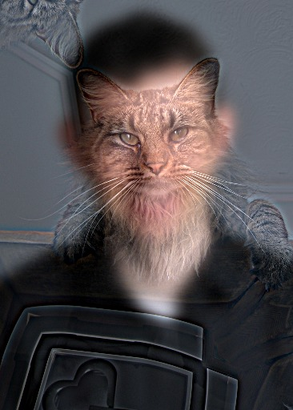
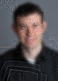
I also experimented with putting colour in different parts of the hybrid. Colour in the low-frequency image made the biggest difference because large smooth areas such as skin and backgrounds are mostly low-frequency information.
2.3Gaussian and Laplacian stacks
To blend images properly, I needed more than just low and high frequencies. I therefore created Gaussian and Laplacian stacks.
A Gaussian stack contains the image blurred by increasing amounts. A Laplacian stack contains the differences between consecutive Gaussian levels, so each level represents details at a different scale. Unlike a pyramid, every level stays the same size as the original, and I didn't use any built-in pyramid functions.
def gaussian_stack(image, levels, sigma0=2):
stack = [image]
for i in range(1, levels):
stack.append(blur(image, sigma0 * 2 ** (i - 1)))
return stack
def laplacian_stack(image, levels, sigma0=2):
g = gaussian_stack(image, levels, sigma0)
lap = [g[i] - g[i + 1] for i in range(levels - 1)]
lap.append(g[-1])
return lap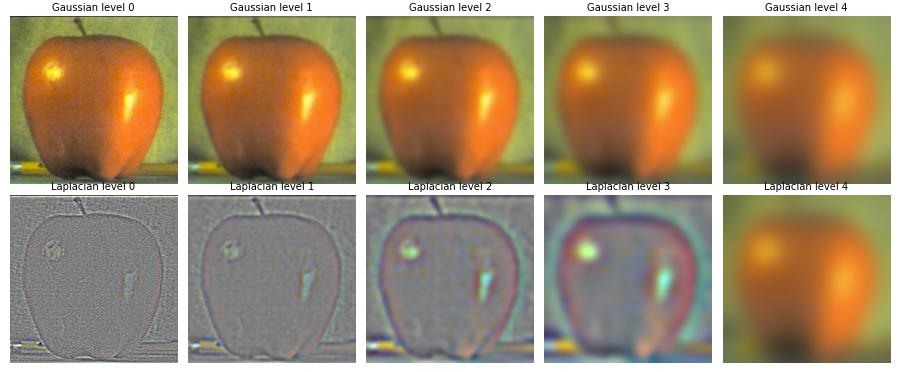
When all the Laplacian levels are added back together, they reconstruct the original image. I checked this and the reconstruction error was extremely small (around 1e-16).
Using these stacks on the apple and orange with a vertical mask, I recreated Figure 3.42 from Szeliski:
2.4Multiresolution blending
For the final part, I used the Gaussian and Laplacian stacks to blend two images together.
Simply cutting one image and pasting it onto another creates an obvious seam. Blurring the mask helps, but if the blur is too large, the details from both images start to overlap and look ghosted.
Multiresolution blending solves this by using a different seam width for different frequency bands. Fine details can switch quickly, while larger changes in colour and lighting can transition more gradually.
\[\text{blend} = \sum_i \Big[\, L_i(A)\, G_i(M) + L_i(B)\,\big(1 - G_i(M)\big) \Big]\]
def blend(img_a, img_b, mask, levels=6, sigma0=2):
la = laplacian_stack(img_a, levels, sigma0)
lb = laplacian_stack(img_b, levels, sigma0)
gm = gaussian_stack(mask, levels, sigma0)
bands = [la[i] * gm[i] + lb[i] * (1 - gm[i]) for i in range(levels)]
return np.clip(sum(bands), 0, 1), bandsThe Oraple


My own blends
I first tried using random masks on food photos, but the results looked messy. The blending itself was working, but the masks did not follow the objects in the images.
This made me realise that the mask is just as important as the blending algorithm. A good mask should follow the object being blended and the two images should have similar structures around the seam.
I then tried masks that follow the objects: the outline of a skyline, and the shape of a face.
Singapore skyline with Calgary's mountains
For this blend, I kept Singapore's skyline and replaced its sky with the Rocky Mountains from Calgary.
The mask follows the outline of the buildings. To make it, I went down each column of the Singapore photo until the pixels stopped looking like sky (bright, blue or grey), and counted everything below that as city. With a hard paste, the cut-out edges around the towers are sharp and a leftover grey patch of Singapore's clouds shows up. After multiresolution blending, the sky changes smoothly and the mountains look like they are behind the city.
Cheetah face on a tabby cat ★
This was my favourite blend. I aligned the cheetah's face with the tabby cat and used a mask around the face.
The colours of the two animals were already fairly similar, which helped the blend. The cheetah's tear lines were still visible, while the cat's whiskers continued across the boundary.
Comparing the hard paste with the multiresolution blend made the difference quite obvious. The hard paste has a clear boundary, while the multiresolution version gradually mixes the different frequency bands together.
I also looked at the different Laplacian levels of the blend. At the finer levels, the fur and whiskers change more sharply. At the coarser levels, the transition becomes much wider and smoother.
Bells & Whistles: colour
I also compared the colour and grayscale versions of the skyline blend.
The grayscale version still blends, but it looks flatter, and the sky and the glass towers are harder to tell apart. In colour, the blue sky from Calgary goes well with Singapore's blue glass buildings, and the snow on the mountains stands out, so the scene looks more believable.
Colour also makes blending harder because the colours need to transition smoothly as well as the brightness. Multiresolution blending helps with this because the low-frequency colour information gets a wider transition.
What I learned
The biggest thing I learned is that "sharp" and "smooth" are really about frequencies, and a simple Gaussian blur is enough to separate them.
I also learned that getting the algorithm right is not always enough. For the image blending part, the alignment, image choice and mask were just as important as the actual blending method.
Even small implementation details can make a difference too. For example, the way the image boundary is handled can create fake edges if it is not done carefully.
Overall, this project helped me understand how the same basic idea of separating frequencies can be used for edge detection, sharpening, hybrid images, and blending.